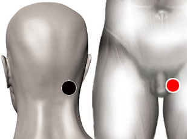

Malignidad
Pares
occipital - testículo
oído - ovario
oído (D) - oído (D)
testículo - oído

Generalidades:
Este par se refiere a energías negativas de tipo paranormal, lo que también se conoce como parásitos energéticos, que pueden causar diversos trastornos psíquicos, emocionales, energéticos o físicos.
En forma coloquial lo que se llama magia negra, brujería, posesiones...
Frecuentemente puede ir acompañado de otros pares o patógenos como son las Rickettsias (talón-talón).
El Dr. David Goiz Martinez refiere en su guía el par Occipital-Testículo. En otras guías se presenta el Par Oído - Ovario (incluso en el hombre) que se aplica para el mismo propósito. En el caso de este segundo par, primero aplicar ambos polos en el lado derecho del paciente y luego revisar si se presentan en el izquierdo.
Se pueden aplicar otras técnicas como reiki, rituales del limpieza, ceremonias espirituales para limpiar a la persona.